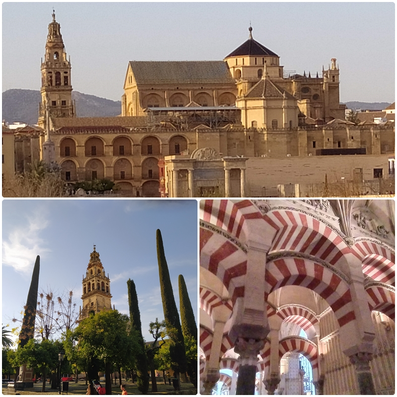

La Mezquita Catedral fue declarado Patrimonio dela Humanidad en 1984 por la UNESCO, es el resultado de ampliaciones e interpolaciones, las primeras cuando todavía era mezquita musulmana, y las segundas, sobre todo, a partir de la transformación en templo cristiano. Las fuentes árabes cuentan que hasta la llegada de Abd ar-Rahmán I los musulmanes cordobeses rezaban los viernes el día de oración común en la mezquita principal, en la mitad sur de una iglesia visigoda, que era compartida con los cristianos identificada como la Basílica de San Vicente, cuyos restos aparecieron bajo la primera mezquita. Dichos restos, se exponen en unas cuantas vitrinas dentro de la catedral. El príncipe omeya Abd ar-Rahmán I vino a la península de Damasco, en Siria, huyendo de la venganza de dinastía reinante, la Abbsí. Independizó Al-Andalus del poder político de Oriente y tomo la decisión medio religiosa medio política de levantar una mezquita, a partir del 785 al 86, digna de nuevo emirato independiente. Está primera mezquita costaba de una superficie cuadrada de 79 m de lado, dividida en dos partes: el sahn ó y la sala de oración formada por naves de arquerías sobre columnas que se aprovecharon de construcciones romanas y visigodas de la ciudad. Abd ar-Rahmán II y Abd ar-Rahmán III agrandaron el recinto, pero la intervención más suntuosa y aplaudida se hizo en le 962, con al-Hákam II. La última ampliación se realizó en el califato e Hisham II, bajo la supervisión de Almanzor, en el año 987; a causa de la proximidad del río, hubo de edificarse en dirección al este, aumentando también el patio donde se construyó un aljibe. Nuevos hallazgos arqueológicos en 1998 sacaron a la luz la calle perimetral y parte del muro este de la primitiva mezquita, anterior a la ampliación de Almanzor.
En la año 1236, tras la reconquista de Córdoba por Fernando III el Santo, fue consagrada como templo cristiano bajo la advocación de Santa María. En el siglo XIV, reinante Enrique II de Trastámara, se realizaron la Capilla Real y la decoración de la Puerta del Perdón, iniciándose la vez la construcción de capillas privadas adosadas a los muros del recinto. A fines del siglo XV se edifica la primitiva Capilla Mayor gótica y a lo largo del siglo XVI se suceden las reformas a cargo de la familia de arquitectos Hernán Ruiz. La primera de estás se llevó a cabo entre 505 y 1514, afectando especialmente al exterior. De 1514 a 1523 se arreglaron la Sala Capitular y la Librería, construyéndose también varias capilla particulares. La tercera reforma se centró en la Capilla Mayor y Coros, de ella se ocupó Hernán Ruiz el Viejo. Tras un periodo de inactividad, se reemprenden las obras durante el episcopado de don Francisco Reinoso (1597-1601), la bajo la dirección del maestro Juan de Ochoa. El 8 de septiembre de 1607 se inauguraron la nueva Capilla Mayor y el Coro.